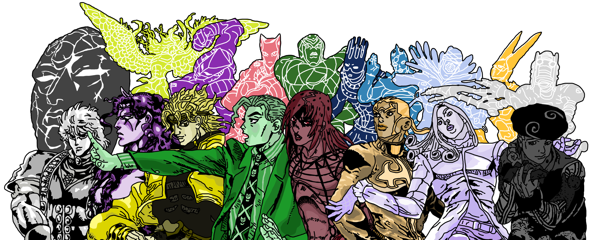
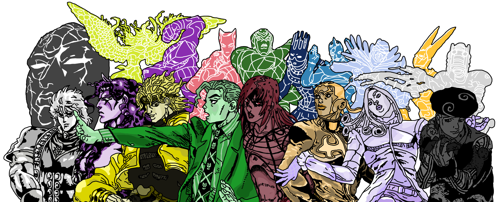

Hey Baby!
JoJo's Bizarre A d v e n t u r e
Com todos os fatos, curiosidades, conhecimento,
JOJO REFERENCES, memes
e muito, muito mais!
 

O que é esse site?
Esse site é uma homenagem, um guia e uma análise educativa dos famosos livros, OVA(Animação de Vídeo Original)s, série e anime(animações orientais) "JoJo's Bizarre Adventure" de Hirohiko Araki. Serve também como um projeto pessoal além de propósitos escolares e didáticos.
Porque "JoJo"?
JoJo's Bizarre Adventure é uma das melhores séries e animes que eu já vi na vida. É uma constante mistura de inteligência real e incrível criatividade não-oniscientes e razoáveis, poderes e supernatureza bem-explicadas e diligentemente elaboradas, batalhas com consequências interessantes e duradouras, personagens envolventes e nunca 100% chatos, histórias planejadas e lógicas que fazem a progressão sentir natural, cenas visualmente lindas e polidas, coreografia legal e implementação de táticas brilhantes, personagens e cenários diferentes e únicos, lugares reais e variados com boa e respeitosa representação cultural(mas ainda não foram pro Brasil :(. Talvez em JoJoLands...), sábia utilização de cores e experimentação corajosa, linhas e traços simples mas memoráveis e um estilo de arte definido mas explorador, música FANTÁSTICA e própria de cada personagem e cenário com leitmotifs inconfundíveis, drama com peso e gravidade sensíveis e pessoais, vilões com influência poderosa mas claramente não invencíveis, e a maior e melhor diferença de muitos animes: Não existe Power-Creep. A inteligência é o que vence. Mesmo com poderes, maioria de TODOS os personagens do Anime podem se rasgar na porrada e acabar no empate. E eu repito, maioria de TODOS os personagens. O amigão do principal contra o VILÃO da parte, o cara que descobriu seu poder dois segundos atrás contra o PROTAGONISTA, o cara MAIS FORTE DO ANIME não é tão forte que quebra a realidade(É o Star Platinum que é o mais forte, nem vem. Mas o Tusk também não é OP, é só atirar no Johnny smh.) E todos os personagens do anime morrem para um simples tiro no coco, mesmo com poderes extraordinários, se eles não prestarem atención. Só saber usar seu poder melhor que o outro e ser um maluco big brain e você tá relaxado. E, se isso não fosse o bastante, bem cedo na série e mangá(tipo gibi oriental) é estabelecido que todos os poderes existentes no anime irão se manifestar diferente do outro. O que isso significa? Significa que TODOS OS PODERES que você vê na série ou mangá depois de um certo ponto irão ser COMPLETAMENTE DIFERENTES. TODAS as habilidades, TODAS as técnicas, TUDO irá ser diferente. E outra coisa muito top é o mistério. Quem tem poderes não tem uma aura ou um sinal, eles só tem. Significa que pode ser qualquer um. Seu vizinho, Sua mãe, você, seu cachorro(sim, pode ser o seu cachorro), aquela pedra que fez você tropeçar na frente da escola inteira e fez você ser zoado pelo resto do semestre por causa de um erro que todo mundo poderia cometer mas que infelizmente só você cometeu e tem que viver com suas decisões pelo resto de sua vida. Era seu vizinho usando o seu poder "Pedra Dura" que te tropeçou e garantiu que todos perto da rocha iriam zombar de quem tropeçou. Agora tem que ir em uma jornada pra achar amigos que também não gostam dele pra impedir seu caminho do mal, reafirmar sua identidade e derrotar o resto do conselho de vizinhos para jogar ele debaixo de uma ambulância e se libertar da culpa enquanto todos seus amigos nunca são vistos de novo na próxima parte. Menos o Rohan. Ele é eterno.
Onde posso achar mais dessa série gulossísima?
A série animada pode ser encontrada no Crunchyroll, Netflix, Hulu, Tubi, Peacock, Pluto TV, Freevee, Roku Channel, HBO Max, etc. O mangá está disponível pra venda através da loja oficial Panini Brasil, da loja online da Panini US, da loja online da Panini JP, da VIZ Media, da Amazon, do Mercado Livre, da Shopee, da Barnes & Noble, etc. Pode também apoiar lojas brasileiras como a Rika Comic Shop(Consolação, SP), Mundos Infinitos Brasil(Vila Clementino, SP), Anime Hunter(Liberdade, SP), entre outros.
E-Books estão disponível pra venda através da loja oficial Shueisha, na Amazon e na Kindle Store.
Existe Jogos disponíveis no Xbox (360, One, Scorpion, X/S), Playstation (2, 3, 4 e 5), Steam, Amazon, Nuuvem, Nintendo E-Shop, Android Shop, RPCS3 emuladores, eBay, Google Play Store, Gameboy, algumas Arcades, Capcom, Fightcade, GGPOZ/GGPO, entre muitos, muitos outros. Tem tantos lugares que eu me recuso a prover mais fontes. Então não tem desculpa. Se quiser, é só achar. O preço pode ser um pouco mais complicado, mas dá pra aguentar.
Mas, Enfim